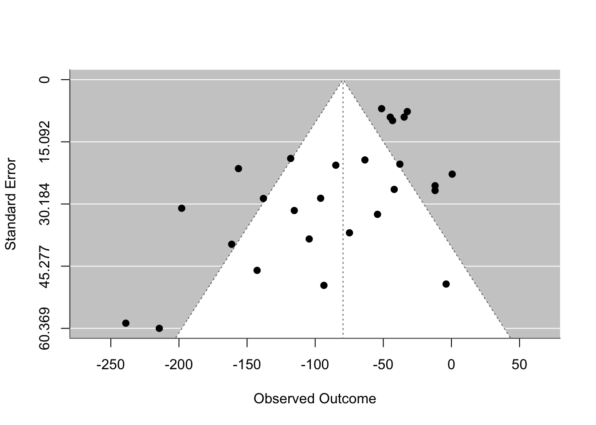

Start by loading the data and verifying that all the requirements are met.
Show the code
# Install and load necessary packageslibrary(readxl)library(meta)library(metafor)library(ggplot2)# Import the data from the Excel filedata <-read_excel("../data/metaanalysis_data.xlsx")# View the first few rows of the datahead(data)
Next we can generate some aditional variables to help us perform teh required analysis.
Effect Sizes for Toys:
Calculating individual effect sizes for Male and Female toys allongwith their variane.
Show the code
# Calculate effect sizes and variances for male toysdata$effect_size_male <- data$Mean_boys_play_male - data$Mean_girls_play_maledata$variance_male <- (data$SD_boys_play_male^2/ data$N_boys) + (data$SD_girls_play_male^2/ data$N_girls)# Calculate effect sizes and variances for female toysdata$effect_size_female <- data$Mean_boys_play_female - data$Mean_girls_play_femaledata$variance_female <- (data$SD_boys_play_female^2/ data$N_boys) + (data$SD_girls_play_female^2/ data$N_girls)
Perfroming Meta Analysis:
Now we can perform the meta analysis on the effect sizes for male and female toys.
Male Toys
Show the code
# Meta-analysis for male toysres_male <-rma(yi = data$effect_size_male, vi = data$variance_male, method="REML")# Summary of the meta-analysis for male toyssummary(res_male)
Random-Effects Model (k = 27; tau^2 estimator: REML)
logLik deviance AIC BIC AICc
-149.6595 299.3189 303.3189 305.8351 303.8406
tau^2 (estimated amount of total heterogeneity): 4678.7733 (SE = 1509.6966)
tau (square root of estimated tau^2 value): 68.4016
I^2 (total heterogeneity / total variability): 95.18%
H^2 (total variability / sampling variability): 20.76
Test for Heterogeneity:
Q(df = 26) = 215.9966, p-val < .0001
Model Results:
estimate se zval pval ci.lb ci.ub
94.7832 14.2826 6.6362 <.0001 66.7897 122.7766 ***
---
Signif. codes: 0 '***' 0.001 '**' 0.01 '*' 0.05 '.' 0.1 ' ' 1
Show the code
# Funnel plot for male toysfunnel(res_male)
Show the code
# Optional: Enhanced funnel plot with ggplot2funnel_plot_male <-ggplot(data, aes(x = effect_size_male, y =sqrt(variance_male))) +geom_point() +geom_smooth(method ="lm", color ="red") +labs(title ="Funnel Plot for Male Toys", x ="Effect Size", y ="Standard Error") +theme_minimal()print(funnel_plot_male)
Female Toys
Show the code
# Meta-analysis for female toysres_female <-rma(yi = data$effect_size_female, vi = data$variance_female, method="REML")# Summary of the meta-analysis for female toyssummary(res_female)
Random-Effects Model (k = 27; tau^2 estimator: REML)
logLik deviance AIC BIC AICc
-143.9058 287.8116 291.8116 294.3278 292.3333
tau^2 (estimated amount of total heterogeneity): 2451.0440 (SE = 892.2452)
tau (square root of estimated tau^2 value): 49.5080
I^2 (total heterogeneity / total variability): 89.17%
H^2 (total variability / sampling variability): 9.23
Test for Heterogeneity:
Q(df = 26) = 129.2792, p-val < .0001
Model Results:
estimate se zval pval ci.lb ci.ub
-79.5599 11.0393 -7.2070 <.0001 -101.1964 -57.9233 ***
---
Signif. codes: 0 '***' 0.001 '**' 0.01 '*' 0.05 '.' 0.1 ' ' 1
Show the code
# Funnel plot for female toysfunnel(res_female)

Show the code
# Optional: Enhanced funnel plot with ggplot2funnel_plot_female <-ggplot(data, aes(x = effect_size_female, y =sqrt(variance_female))) +geom_point() +geom_smooth(method ="lm", color ="red") +labs(title ="Funnel Plot for Female Toys", x ="Effect Size", y ="Standard Error") +theme_minimal()print(funnel_plot_female)
Adding Aditional Variables
Meta-regression for male toys, assuming quality columns are binary indicators (0 or 1). Summary of the meta-regression for male toys
Meta-regression to check if author gender affects the results for female toys
Show the code
res_author_gender_female <-rma(yi = data$effect_size_female, vi = data$variance_female, mods =~ data$`Female authors`+ data$`Male authors`,method="REML")# Summary of the meta-regression for female toyssummary(res_author_gender_female)